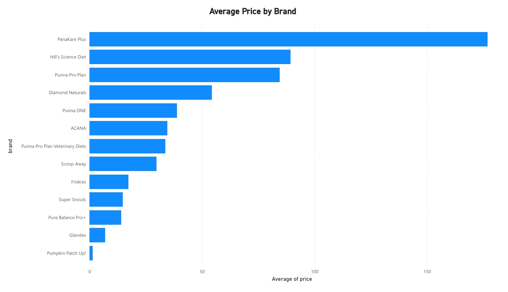
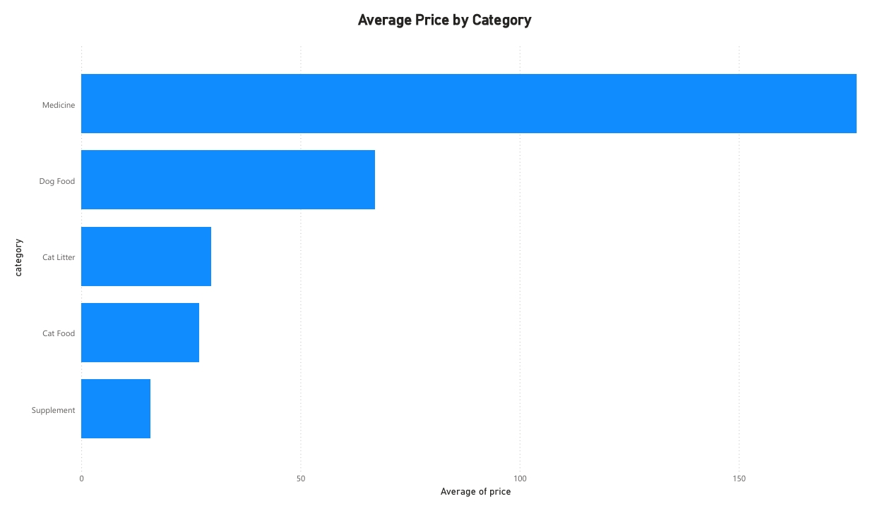
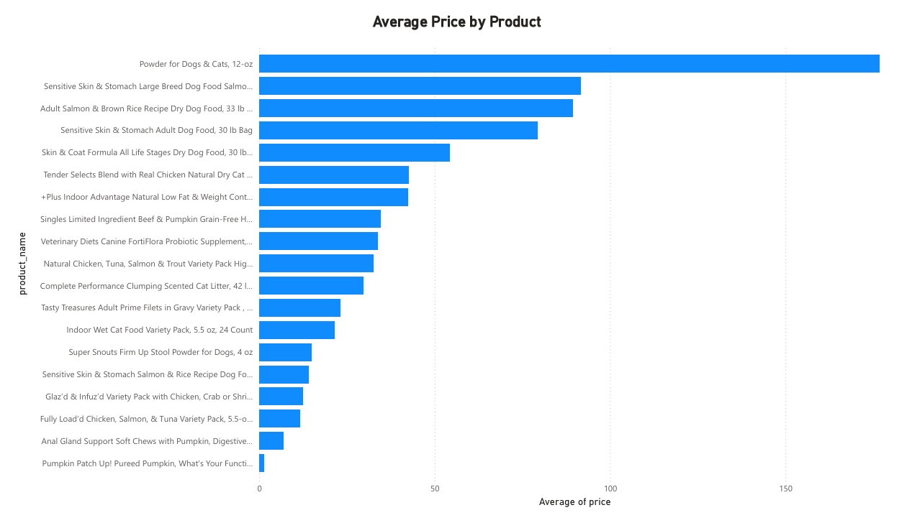
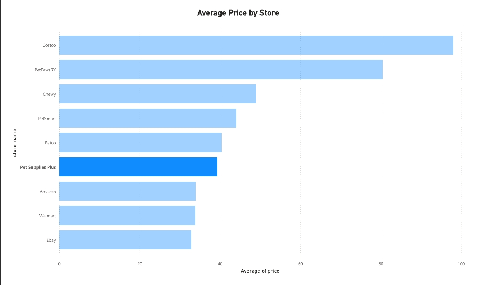
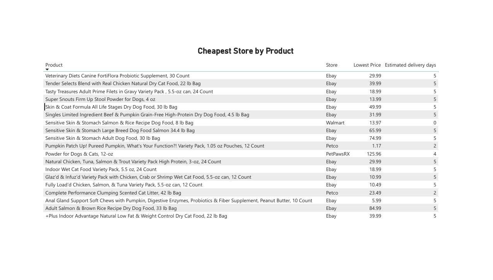
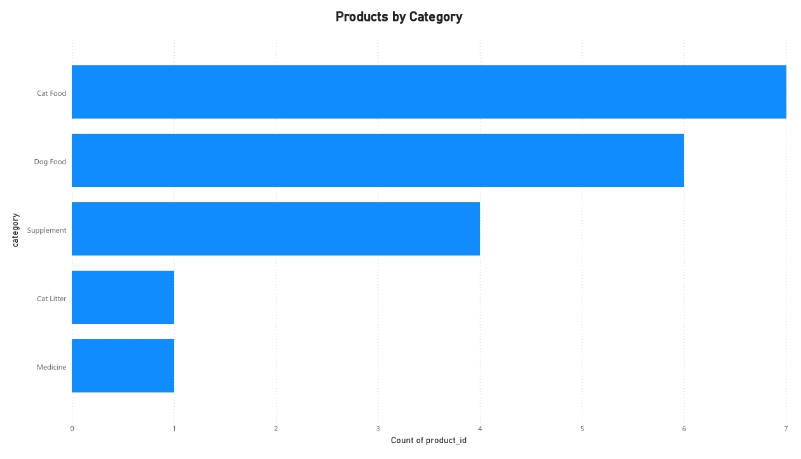
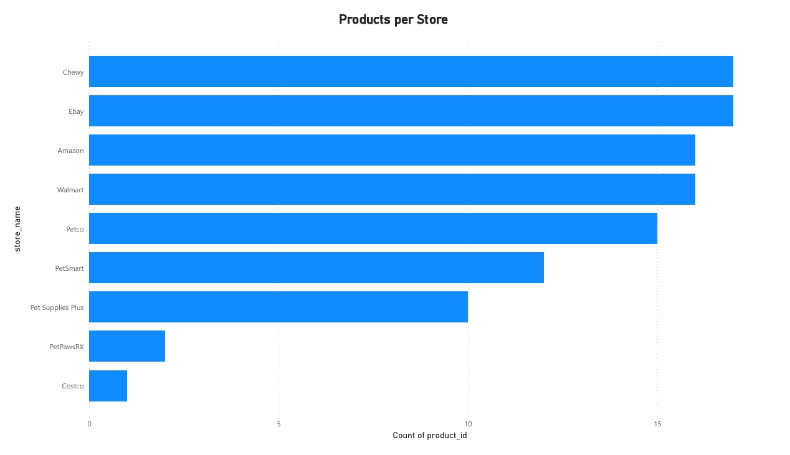

Power BI · Data Visualization · DAX
Seven Power BI reports built on top of the Shopping Tracker Database, turning the same pet product pricing data from the SQL project into visual, at-a-glance comparisons across brands, categories, products, and stores.
The Problem
The Shopping Tracker Database project could already answer questions like "which store is cheapest for this product" or "what's the average price by category," but the answers lived in query result grids. Power BI turns that same data into visuals a non-technical stakeholder could scan in seconds: which brands run expensive, which stores consistently undercut the rest, and where a single product's price swings the most across retailers.
Each report connects directly to the same normalized tables (Products, Stores, and StorePrices), so the visuals stay backed by the same relational structure, not a flattened export.
The Reports
Each report isolates one question: pricing by brand, by category, by product, by store, and the cheapest store for every product, so each is easy to read on its own or drop into a larger presentation.
Ranks all 13 brands by average price. PanaKare Plus and Hill's Science Diet run highest, Pumpkin Patch Up! and Glandex lowest.

Medicine has by far the highest average price of any category, well ahead of Dog Food, Cat Litter, Cat Food, and Supplements.

All 19 products ranked by average price across every store that carries them, useful for spotting which individual items carry the most price risk.

Costco and PetPawsRX average the highest prices across their product lines; Walmart, Amazon, and Ebay average the lowest.

A sortable matrix, the Power BI counterpart to the SQL project's ROW_NUMBER() CTE, showing the lowest recorded price and estimated delivery time for every product, store included.

Cat Food and Dog Food make up the bulk of the catalog (7 and 6 products), with Cat Litter and Medicine represented by a single product each.

Chewy and Ebay carry the widest selection of tracked products; Costco carries the narrowest, consistent with its warehouse-club, bulk-item model.

Project Files
Each report ships as both a working .pbix file (open it in Power BI Desktop) and a static PDF export for quick viewing.
What I Learned
Building this alongside the SQL project made the connection between the two skill sets concrete: a GROUP BY and AVG() in MySQL and a DAX measure in Power BI are answering the exact same question, just for different audiences. SQL is where I'd go to investigate or validate a number; Power BI is where that number becomes something a manager or teammate can scan without needing to read a query. Splitting each report into its own focused view, rather than cramming everything onto one crowded dashboard, also made each chart easier to trust at a glance, a pattern I'd carry into QA reporting too, where a clear, single-purpose defect summary beats a dense one every time.